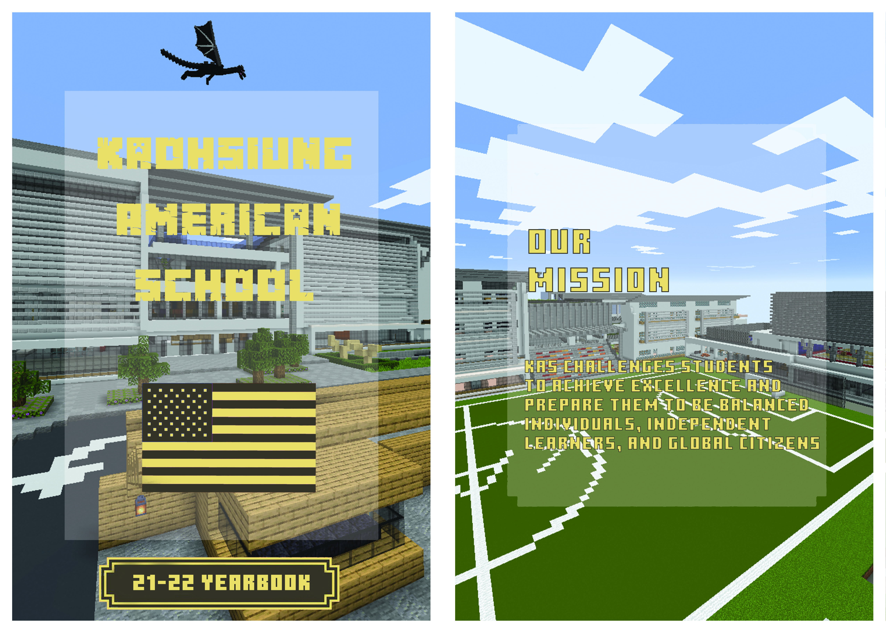
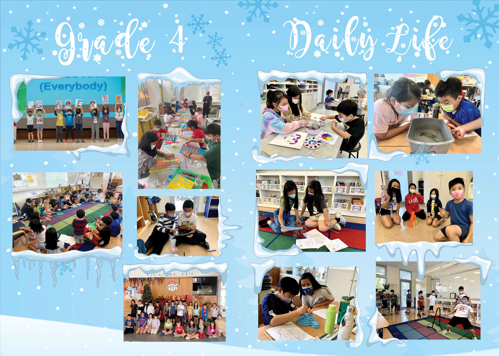
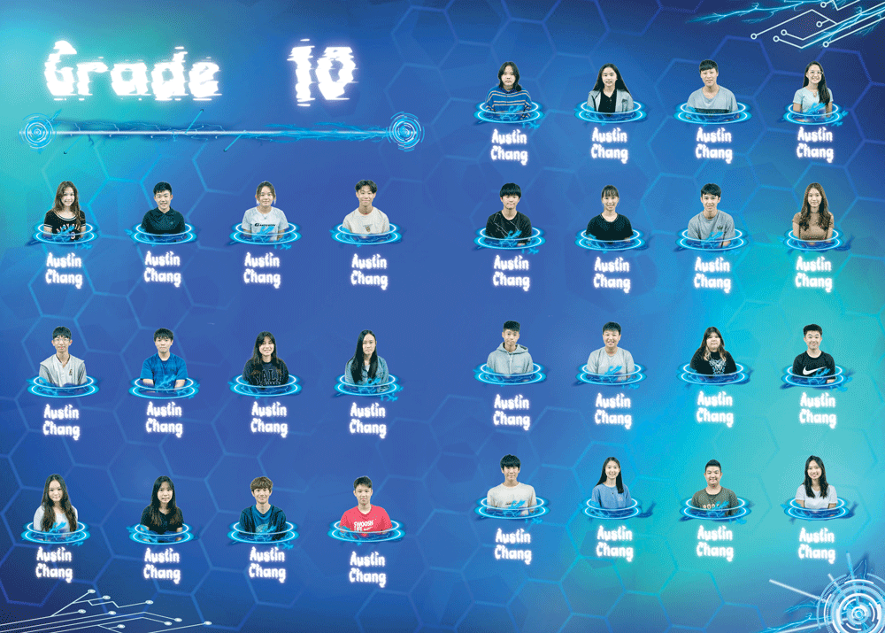

.
.
The page is an overview about all of my yearbook designs from the digital media class (Grade 10), hope you enjoy~
Entertainment Music
My Designs

Minecraft Theme
The Minecraft theme is made with the style of a typical Minecraft Text along with the background of a Minecraft styled KAS. This method is being chosen after a close evaluation of the interests for both elementary, middle school, and even high school students. With years after years of the yearbook being created in a formal style using real life elements, the KAS yearbook should have a one year change that aims toward a virtual reality rather than the actual reality. In the design, a typical KAS yearbook front page design has been used but altered to a Minecraft font. The font is able to grab attention for those fans of video games (large percentage of KAS) and brings a moment of shock and interest using a sense of the unknown for those who have never interacted with games such as Minecraft. Thus, the brackets and the colorings are all based on the “Minecraft handbook” that is extremely common not only around KAS, but also around the world. My team and I have spent months making a virtual minecraft reality just for this theme that shocking looks like an accurate model for Kaohsiung American school. While making this theme, the main obstacles I have faced is actually creating the virtual reality of “Minecraft”. The format of Minecraft is easy to accomplish but being able to create a world in Minecraft that is similar to real life is definitely the most challenging part especially for inexperienced builders. However, this design allowed me to learn to think outside the box for a theme that I came up with, rather than what has already been done. The sense of achievement is something I want to feel again. The uniqueness of the design and the fact that it is at the virtual side made me choose this to be in my portfolio page.

Space Theme
The Kindergarten space theme is a theme we chose in consideration of portraying the affection from these lovable kindergartens. Therefore, my team and I have decided to use a space theme with smooth, no sharp, objects that reflect on the provided toys or things that can probably keep these students calm during times. Our title is chosen using an artistic style, portraying like a manual work rather than digital, alike to the sticked title words in a kindergarten classroom. The font also applies to the names of each student. The usage of the space theme also makes the viewer seem more free and also view the students as free individuals living in a vast space of possibilities, with bright lights to guide their way. Thus, a white background with a lowered opacity has also been used to make the visual images of these students to be more presentable, to stand out from the background using a contrasting color, white and black. During the making of this design, the main obstacles we face is to make these kindergarten students stand out from the background without blocking the background image. Back then, we were of course still new to photoshop and struggled to find a way even on things we think are easy today. I suddenly have a thought of a lowered opacity white square that can act as a background. That immediate thought not only became the element that makes the student stand out, but alsos something that I continued to use in future designs. Therefore, I chose this theme as my portfolio to show the development of the skill within my team and I, and also present the unique method we used to showcase the students with a direct focus.

Snow Theme
For the class of Grade 4, my team and I have chosen the snow theme to continue the sense of affection from these young childrens. We have specifically chosen the snow theme since this theme snows the peacefulness and calmness of the overall mood. The white, fluffy snow showcases the pureness and innocence of these grade 4 students. If one pays attention to the difference in “temperature” between the background and the images, the viewer can realize the contrasting color between yellow and blue. The warmth of yellow is chosen for the images to express the warmth and protections that these students received inside the KAS learning environment, despite how cold it is outside. The stacked snow above the images like a window is another way my team and I used to emphasize that effect. As for title, we have used the white colored font looking like real life handwriting despite the color of the background. This is because we not only want to continue the emphasis on the pureness and calmness, but we also want to present the realism inside the image. After learning from mistakes from previous designs, we still face new obstacles, but this time finding images. It really takes a long time on a google search to find a snowflake that fits the cartoon style, and also, fits the style of the other snowflakes. We do not want an image that doesn’t fit the originally set style of a peaceful cartoon and give a sense of realism. However, I do learn to delete the background of the image without having to search for another one with a transparent background. I have chosen to put this image for my portfolio to emphasize the warmth that KAS provides for the students and allow viewers to have their first sight on the images that are acting as windows that stack snow on the exterior.

Sci-Fi Theme
During the planning of the grade 10 theme, my team and I have aimed to make a theme that showcases OUR grade in a very positive way. I upheld the Sci-Fi theme, which is able to demonstrate the intelligence and the advanced grade that we are. Currently, Sci-Fi is a topic that is mostly present in movies about the future. The fact that we portray ourselves as the innovative ones just makes us stand out intelligently from the rest of the grade levels. Moving on to the title, I have chosen a glitch themed title to showcase the realism of technology that during times are still facing difficulties. As for all texts, I managed to find a way to make the words glow. Not only does this emphasize further on the presence of the innovative technology, but the words can also effectively grab the reader's attention and give them the sense of intelligence that we want them to feel. As for the teleport pads, which are supposed to be lowered opacity backgrounds that help the individuals stand out, I used this hologram type of innovative technology to further reflect on the technology theme and the quality of being advanced it makes the viewers feel. The Sci-Fi theme is one that I have met the most obstacles on. Sci-Fi is more on a virtual part of reality rather than just being in the reality. This means that the entire yearbook page has to be technology based, all images modified to look like an element from the future. An example is, changing the image of the students to be more like an image from the hologram yet still does not make them look like extraterrestrial beings. The change in opacity, coloring have to be exact to fit such topics, which is why it takes such a long time. This is also why I chose this design to be in my portfolio, it is a sign for another step I have taken with the aim to master my photoshopping skills. Thus, the Sci-Fi theme portrays a unique design that is more virtual, like the Minecraft theme, and will be an exceptional design that stands out from the rest.

Creativity Theme
PPersonal Project is well known for it’s creativeness and the critical thinking process that requires the presenters to go through with before achieving a higher standard for their actual project. Therefore, my team and I have used a background with a variety of geometric elements with unique shapes. This can immediately make the viewers feel the creativity presented throughout the page despite the fact that the background does not stand out at all (we want it to be the images). As for the title words, the style of a physically written text is used to emphasize the efforts that these grade 10 students have been putting, not only mentally but physically, on the projects they chose to be their personal project. My team and I have planned the layout of the images to be “random”, in other words with unexpected shapes and designs. This usage refers to the background, which showcases the presence of analytical skills with shapes, basically polytechnic, since that’s what the personal project is mainly about. During the planning for the creativity theme, the main issues my team and I have faced is the thinking process to choose a theme. Any “projects” type of theme can attract too much attention that can divert the viewer’s focus to the background rather than the images. However, looking at the wall at the back of the classroom, I picked up an idea of a geometric theme that shows creativity to the audience without attracting attention at all. This design taught me that a good design isn't based on the attractiveness of the images, but the emotion that it is able to portray without being focused on at all. My learning is exactly why I put this on my portfolio page, to allow all digital media students, all viewers, to feel the emotion that can be expressed from the background alone without even knowing they focused on the background at all.

Galaxy Theme
This is an individual assignment for a yearbook spirit week design. First, I have chosen the galaxy background to give a first impression of the vast space of unknown being portrayed. I have also added mist elements to it to further that sense of insecurities when a person faces something that covers their sight to what they can once see. Ghosts are often drawn as mists, since they are something a human can see with their naked eye. Therefore, such interpretation creates public films or movies that spread such views on these unknown spirits or ghosts. This is exactly why I use this background for the spirit week theme. For my title, I use a yellow colored title with a horror font with tiny holes inside the text to show the abnormalities that do not refer to our brain’s expectations. The usage of the horror title can immediately make the viewers know that the theme will be more halloween based, which is exactly what the spirit week represents. I also included a house point difference since the main entertainment for the spirit week are the house games. The point differences will definitely attract more audience attention since people often struggle to know the results of things that they are a part of, to regain that confidence in themselves. Moving on to the second page, I used categories to category each of the different days of the week. This way, I can remind and show the entertainment of the week and the fun games that are present in every single day of the week. Each of the image frames is a circle since that is how most people interpret the spirits to be, the shapeless beings that they are. This will further emphasize on the topic of “spirit week”. This is a design from the first semester, so I am still facing difficulties in changing image size to make it look more presentable on the big screen. However, I am able to create a page with unique elements that portrays all events in a spirit week without using any texts at all. I have chose this design to be on my portfolio because it is a design that allows me to finally take a step out from the support of my teammates and actually make a design using my limited knowledge before learning the techniques from the entire digital media semester. This is also a design with a fitting background, word, and image sizes. My best design throughout the year, even though I had no knowledge of Photoshop before making it, and it is after all, the design I put the most effort into.

Austin Chang, 2022, Digital Media Class